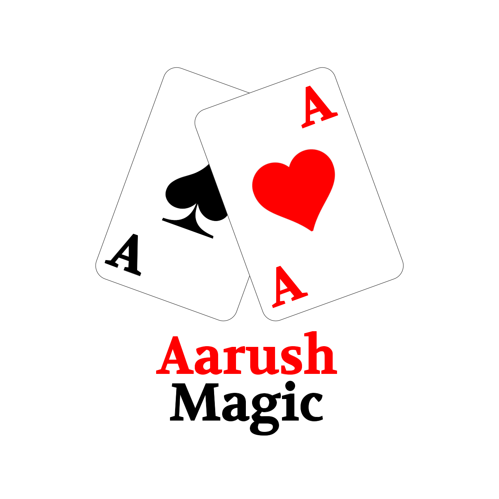

Make A Sundial By Entering Your Latitude Or Using Your Location!

Instructions: Use a latitude or your location to make a sundial. The print it out on a
regular sheet of 8.5x11 piece of paper (cardstock would work better, but it will work with regular paper
too). If everything works, the sundial should print as a 6x3 rectangle. Cut it out along with the triangular
piece on the bottom. On the sundial, cut along the 2 red lines. Fold the sundial along the middle to make a
right angle. Then insert the flaps of the triangle through the cut slot and fold them backwards. Tape or
glue them to the back. Lay your sundial flat and point it north to get the time as shown by the shadow
created by the triangle! Here's your current time: